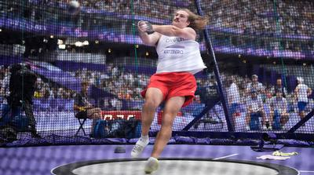

来自卑诗省纳奈莫（Nanaimo）的卡茨伯格（Ethan Katzberg）在今（4）日的男子链球决赛中表现出色，夺得奥运冠军。
这位22岁的加拿大选手在2024年保持不败纪录。他在第一次尝试中投出84.12米的佳绩。在比赛中，其馀11名选手在剩下的5次尝试中都未能突破80米大关。
匈牙利选手哈拉兹（Bence Halasz）仅投出了79.97米，获得银牌。乌克兰的米哈伊洛· 科汉以79.39米排名第三。乌克兰选手科汉（Mykhaylo Kokhan）掷得79.39米获得铜牌。
卡茨伯格今日的成绩仅略低于他在今年4月﹐在肯尼亚创下84.38米的世界赛季最佳成绩。
卡茨伯格是首位在该项目中获得奥运冠军的加拿大选手。
卡茨伯格在2023年取得突破性成绩，成为去年8月最年轻的男子世界冠军，并在11月的智利泛美运动会上获得冠军。
加拿大另一名选手汉密尔顿（Rowan Hamilton）在3次投掷后被淘汰﹐最后以76.59米排名第九。
加拿大上一次获得奥运会链球奖牌是在112年前，吉利斯（Duncan Gillis）在1912年斯德哥尔摩奥运会上获得银牌。
今（4）日较早时候，加拿大女选手罗杰斯（Camryn Rogers）在女子链球资格赛中﹐以第二好成绩晋级周二的决赛。罗杰斯也是现任世界冠军。